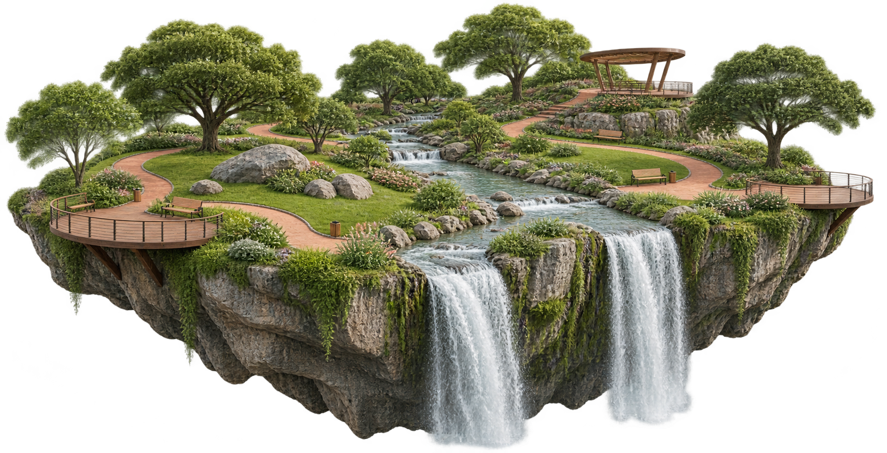

Quiet discovery
Stargazer Grove
A low-lit woodland clearing designed for night-sky viewing, slow walks and unhurried evenings.
Explore ↗A public landscape for everyone
A playful landscape where wilder nature, thoughtful design and everyday life meet.
→
Start exploring
Starlight Park is imagined as a living public landscape: part habitat, part playground and part neighbourhood meeting place. Every route offers a new way to move, pause or notice what is around you.
Our approach →Quiet discovery
A low-lit woodland clearing designed for night-sky viewing, slow walks and unhurried evenings.
Explore ↗
Play for every age
An inclusive landscape of timber structures, soft landforms and imaginative routes through the trees.
Explore ↗
Water in motion
A hands-on stream garden where children can follow water, test small dams and learn by doing.
Explore ↗Harmony Glade

A generous urban woodland with open lawns, creekside paths and space to gather.
Plan a visit →Eco values
Connected habitats, native planting and seasonal care help wildlife move through the park.
Durable materials, shaded routes and water-aware planting guide each design decision.
Clear learning moments invite visitors to understand and care for the landscape together.

Our mission
We make room for everyday wonder: a shaded bench, a lively stream, a first sighting of a butterfly or an evening shared beneath the trees.

Make a day of it